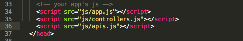
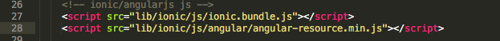
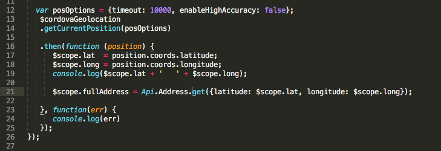
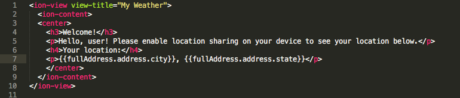
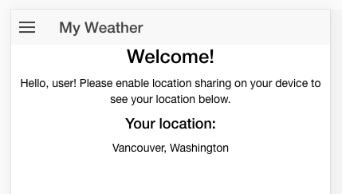

To perhaps overly simplify, factories allow us to pass in a function (or multiple functions!) to the controller in the same way that we would pass in a normal variable. Inside the www/js folder, you should create a file called apis.js. Before moving any further, remember to include the new JS file in the project by adding a new script tag to index.html, right under the script tag that includes js/controllers.js. In this project, that should be line 36 of index.html.

Back inside apis.js, add the following code:
What this does is create an Angular module, inside of which we define a factory that returns a given resource. In our case, there are two resources returned by Api - the RESTful interface with OpenWeatherMap and the same with OpenStreetmap. They both take two params (:latitude and :longitude), which we will be passing in using our controller. We're going to specifically called the reverse geolocation portion of the API, and passing in the addressdetails flag to note that we'd like the address broken down into individual elements. This will be handy later, when we don't want the entirety of the result displayed in the view, but instead opt to display the city and state returned.
Note: for now, we are using XXX as a placeholder for the API key that we will need to sign up for in the next step.
In order to use the ngResource module, we'll need to hop back to the command line for a moment and install ngResource. This can be done with either npm, with the command npm install angular-resource, or using bower, with the command bower install angular-resource. From there, moving to controllers.js, we can now pass the factory into the controller by name, by setting it as a function param on line 3.
We also need to pass in the new starter.apis module on line 1 of the same file ...
... and we need to explicitly include the Angular JavaScript file that will allow apis.js to use ngResource, by including a new script tag after the ionic.js script tag.

Remembering that the geolocation function we wrote earlier is asynchronous and we'll have to wait for the latitude and longitude to be returned before we can call the OpenStreetmap API, we'll place the code for making that call inside the function in our controller, rather than after it. We need to return the data into a scope-level variable (again, so that we can use it in the view), so we're going to capture the entire JSON response into a $scope.fullAddress variable. The factory was set up as a means of interacting with a RESTful API, and so common RESTful calls like GET are built into the Api variable we passed in as a param.

With the above code, we are now able to access the address of the user and output it in the view. While the variable is called $scope.fullAddress in the controller, in the view we can just refer to it without $scope and invoke it as fullAddress. I know from past experience that the JSON response returned from the OpenStreetmaps API allows you to access the city and state by appending .address.city and .address.state to fullAddress in the view. Note the use of dual curly brackets surrounding scope-level variables that need to be output in the view.

And with that, after a momentary pause while the calls to geolocation and then the OpenStreetmap APIs are completed, my location is displayed on the screen.

Now it's time to sign up for the OpenWeatherMap API, get our API key, and start using the Weather resource to output the weather to the view as well.